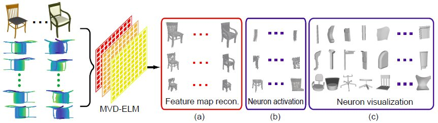
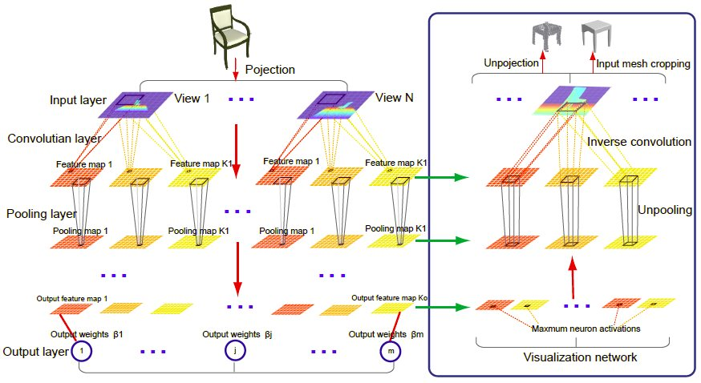
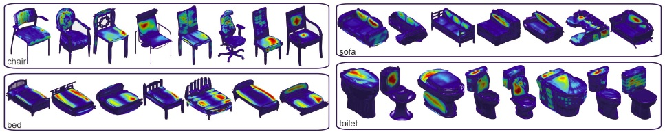
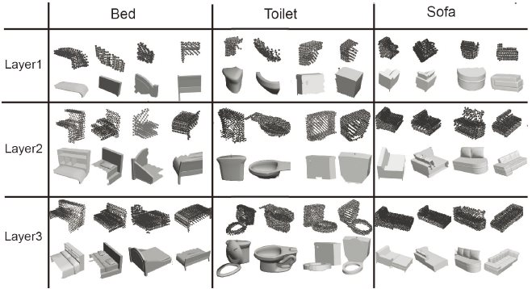

Projective Feature Learning for 3D Shapes with Multi-View Depth Images
Zhige Xie1,2,
Kai Xu*,1,2,
Wen Shan3, Ligang Liu3, Yueshan Xiong2, Hui Huang1
1Shenzhen
VisuCA Key
Lab/SIAT, 2National
University of
Defense Technology,
3University of Science and Technology of China
Computer Graphics Forum (Pacific Graphics 2015)
* Corresponding author: Kai Xu (kevin.kai.xu [at] gmail.com)

Figure 1: We propose an projective feature learning method, called MVD-ELM, for learning 3D shape features from multi-view
depth images. (a) Our network ensures that the unprojection of the feature maps in each layer together form a reconstruction
of the input 3D shapes. (b) Point clouds reconstructed from the maximally activated regions of feature maps (neurons). (c)
Visualization of cropped shape parts according to the maximally activated neurons.
|
Abstract
|
Feature learning for 3D shapes is challenging due to the lack of natural paramterization for 3D surface models.
We adopt the multi-view depth image representation and propose Multi-View Deep Extreme Learning Machine
(MVD-ELM) to achieve fast and quality projective feature learning for 3D shapes. In contrast to existing multiview
learning approaches, our method ensures the feature maps learned for different views are mutually dependent
via shared weights and in each layer, their unprojections together form a valid 3D reconstruction of the input
3D shape through using normalized convolution kernels. These lead to a more accurate 3D feature learning as
shown by the encouraging results in several applications. Moreover, the 3D reconstruction property enables clear
visualization of the learned features, which further demonstrates the meaningfulness of our feature learning.
|
|
|
Paper |
|
|
|
Slides |
|
|
|
| Images |

Figure
2: The architecture of MVD-ELM learning (left part) and visualization (right part). Left: The projected multi-view depth
images for a given input 3D shape is input to their respective view channels. In each view channel, the depth image goes through
a cascading layers of convolution and pooling. Each convolution layer produces K_l feature maps with the random generated
convolution kernels. When reaching to the last layer, the output feature maps are used to compute the optimized output weights.
Right: The visualization network runs in the opposite direction of the training network, with inverse convolution and unpooling
operations, until it reaches the input layer where we obtain the maximally activated regions in the depth images. These regions
are then unprojected onto the input shapes and used to crop the shapes into characteristic parts.

Figure
3: Color-coded visualization of neuron activations
on the input mesh.

Figure
4: Visualization of neurons of the first three layers of
MVD-ELM, for three categories from ModelNet10, i.e., bed,
toilet and sofa. For each category in various layers, we show
two visualization results in two rows. The upper row shows
point clouds generated from neurons activations in MVDELM,
while the lower row visualizes cropped parts of input
models corresponding to those maximally activated regions.
|
|
|
| Thanks |
We thank the anonymous reviewers for valuable comments.
This work was supported in part by NSFC (61202333,
61222206, 11426236, 61379103), National 973 Program
(2015CB352501), Guangdong Sci. and Tech. Program
(2014B050502009, 2014TX01X033), Shenzhen VisuCA
Key Lab (CXB201104220029A) and One Hundred Talent
Project of Chinese Academy of Sciences.
|
|
|
| Code |
We provide the Matlab code, along with corresponding test dataset, for MVD-ELM training, testing, feature visualization, as well as its fully convolutional version for 3D mesh segmentation. The dataset contains multi-view depth images captured for the 3D models originally collected by the Princeton ModelNet Dataset.
Source code (ZIP, 82MB)
Test data (ZIP, 414MB)
|
|
|
| Bibtex |
@article
{xie_eg15,
title = {Projective Feature Learning for 3D Shapes with
Multi-View Depth Images},
author
= {Zhige Xie and Kai
Xu and Wen Shan and Ligang Liu and Yueshan Xiong and Hui Huang},
journal
= {Computer Graphics Forum (Proc. of Pacific Graphics 2015)},
volume
= {34},
number
= {6},
pages
= {to appear},
year
= {2015}
}
|
 
|